Piece list
All of the pieces currently in the game. This file is automatically generated from Valheim 0.217.38 using the JotunnDoc mod found on our GitHub.
_CultivatorPieceTable
| Piece | Token | Name | Description | Resources required |
|---|---|---|---|---|
| cultivate_v2 | $piece_cultivate | Cultivate | NULL | |
| replant_v2 | $piece_replant | Grass | NULL | |
| sapling_turnip 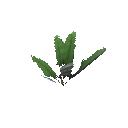 |
$piece_sapling_turnip | Turnip | NULL |
|
| sapling_seedturnip 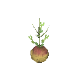 |
$piece_sapling_seedturnip | Seed-turnip | Plant a turnip to get more seeds. |
|
| sapling_onion 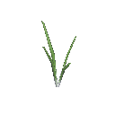 |
$piece_sapling_onion | Onion | NULL |
|
| sapling_seedonion 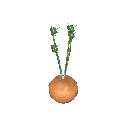 |
$piece_sapling_seedonion | Seed-onion | Plant onion seeds to get even more seeds. |
|
| sapling_carrot 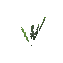 |
$piece_sapling_carrot | Carrot | Plant carrot seeds to grow carrots. |
|
| sapling_seedcarrot 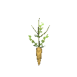 |
$piece_sapling_seedcarrot | Seed-carrot | Plant a carrot to get more seeds. |
|
| sapling_barley 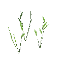 |
$piece_sapling_barley | Barley | NULL |
|
| sapling_flax |
$piece_sapling_flax | Flax | NULL |
|
| sapling_jotunpuffs 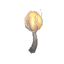 |
$item_jotunpuffs | Jotun puffs | NULL |
|
| sapling_magecap 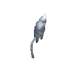 |
$item_magecap | Magecap | NULL |
|
| FirTree_Sapling 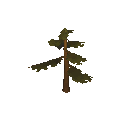 |
$prop_fir_sapling | Fir sapling | NULL |
|
| PineTree_Sapling 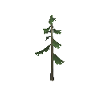 |
$prop_pine_sapling | Pine sapling | NULL |
|
| Beech_Sapling 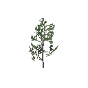 |
$prop_beech_sapling | Beech sapling | NULL |
|
| Birch_Sapling 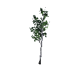 |
$prop_birch_sapling | Birch sapling | NULL |
|
| Oak_Sapling 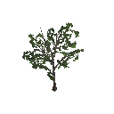 |
$prop_oak_sapling | Oak sapling | NULL |
|
_HammerPieceTable
| Piece | Token | Name | Description | Resources required |
|---|---|---|---|---|
| piece_repair | $piece_repair | Repair | NULL | |
| fire_pit 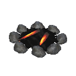 |
$piece_firepit | Campfire | NULL |
|
| fire_pit_iron 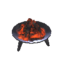 |
$piece_firepit_iron | Firepit iron | NULL |
|
| bonfire 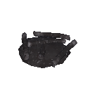 |
$piece_bonfire | Bonfire | NULL |
|
| hearth 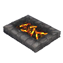 |
$piece_hearth | Hearth | NULL |
|
| wood_stack 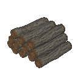 |
$piece_woodstack | Wood stack | NULL |
|
| wood_fine_stack 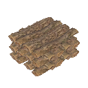 |
$piece_woodfinestack | Fine wood stack | NULL |
|
| wood_core_stack 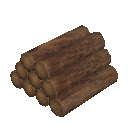 |
$piece_woodcorestack | Core wood stack | NULL |
|
| wood_yggdrasil_stack 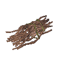 |
$piece_yggdrasilstack | Yggdrasil wood stack | NULL |
|
| stone_pile 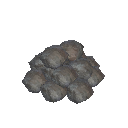 |
$piece_stonepile | Stone pile | NULL |
|
| coal_pile 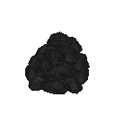 |
$piece_coalpile | Coal pile | NULL |
|
| blackmarble_pile 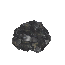 |
$piece_marblepile | Black marble pile | NULL |
|
| piece_cookingstation 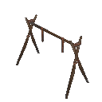 |
$piece_cookingstation | Cooking station | NULL |
|
| piece_cookingstation_iron 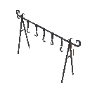 |
$piece_cookingstation_iron | Iron cooking station | NULL |
|
| piece_cauldron 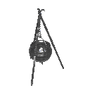 |
$piece_cauldron | Cauldron | Crafting station |
|
| cauldron_ext1_spice 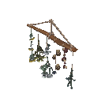 |
$piece_cauldron_ext1_spice | Spice rack | Cauldron improvement |
|
| cauldron_ext3_butchertable 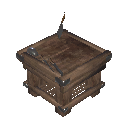 |
$piece_cauldron_ext3_butchertable | Butcher's table | Cauldron improvement |
|
| cauldron_ext4_pots 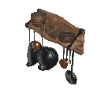 |
$piece_cauldron_ext4_pans | Pots and pans | Cauldron improvement |
|
| cauldron_ext5_mortarandpestle 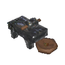 |
$piece_cauldron_ext5_mortarandpestle | Mortar and pestle | Cauldron improvement |
|
| piece_oven 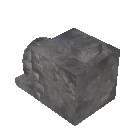 |
$piece_oven | Stone oven | NULL |
|
| piece_workbench 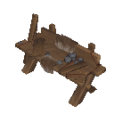 |
$piece_workbench | Workbench | Crafting station |
|
| piece_workbench_ext1 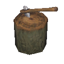 |
$piece_workbench_ext1 | Chopping block | Workbench improvement |
|
| piece_workbench_ext2 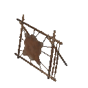 |
$piece_workbench_ext2 | Tanning rack | Workbench improvement |
|
| piece_workbench_ext3 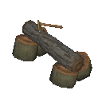 |
$piece_workbench_ext3 | Adze | Workbench improvement |
|
| piece_workbench_ext4 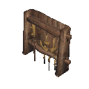 |
$piece_workbench_ext4 | Tool shelf | Workbench improvement |
|
| piece_stonecutter 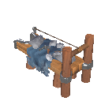 |
$piece_stonecutter | Stonecutter | Crafting station |
|
| piece_artisanstation 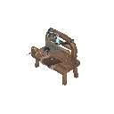 |
$piece_artisanstation | Artisan table | Crafting station |
|
| forge 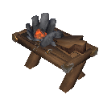 |
$piece_forge | Forge | Crafting station |
|
| forge_ext1 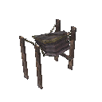 |
$piece_forge_ext1 | Forge bellows | Forge improvement |
|
| forge_ext2 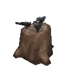 |
$piece_forge_ext2 | Anvils | Forge improvement |
|
| forge_ext3 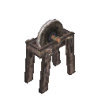 |
$piece_forge_ext3 | Grinding wheel | Forge improvement |
|
| forge_ext4 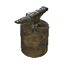 |
$piece_forge_ext4 | Smith's anvil | Forge improvement |
|
| forge_ext5 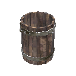 |
$piece_forge_ext5 | Forge cooler | Forge improvement |
|
| forge_ext6 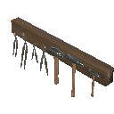 |
$piece_forge_ext6 | Forge toolrack | Forge improvement |
|
| smelter 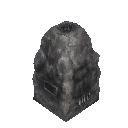 |
$piece_smelter | Smelter | NULL |
|
| blastfurnace 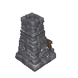 |
$piece_blastfurnace | Blast furnace | NULL |
|
| eitrrefinery 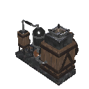 |
$piece_eitrrefinery | Eitr refinery | NULL |
|
| blackforge |
$piece_blackforge | Black forge | Crafting station |
|
| blackforge_ext1 |
$piece_blackforge_ext1 | Black forge cooler | Black forge improvement |
|
| blackforge_ext2_vise |
$piece_blackforge_ext2 | Vice | Black forge improvement |
|
| charcoal_kiln |
$piece_charcoalkiln | Charcoal kiln | NULL |
|
| windmill |
$piece_windmill | Windmill | NULL |
|
| piece_spinningwheel |
$piece_spinningwheel | Spinning wheel | NULL |
|
| wood_floor_1x1 |
$piece_woodfloor1x1 | Wood floor 1x1 | NULL |
|
| wood_floor |
$piece_woodfloor2x2 | Wood floor 2x2 | NULL |
|
| wood_stair |
$piece_woodstair | Wood stair | NULL |
|
| wood_stepladder |
$piece_woodstepladder | Wood ladder | NULL |
|
| wood_wall_quarter |
$piece_woodwallquarter | Wood wall 1x1 | NULL |
|
| wood_wall_half |
$piece_woodwallhalf | Wood wall half | NULL |
|
| woodwall |
$piece_woodwall | Wood wall | NULL |
|
| wood_wall_roof |
$piece_woodwallroof | Wood wall 26 | NULL |
|
| wood_wall_roof_upsidedown |
$piece_woodwallroof_upsidedown | Wood wall 26 (inverted) | NULL |
|
| wood_wall_roof_top |
$piece_woodwallrooftop | Wood roof cross 26 | NULL |
|
| wood_wall_roof_45 |
$piece_woodwallroof45 | Wood wall 45 | NULL |
|
| wood_wall_roof_45_upsidedown |
$piece_woodwallroof45_upsidedown | Wood wall 45 (inverted) | NULL |
|
| wood_wall_roof_top_45 |
$piece_woodwallrooftop45 | Wood roof cross 45 | NULL |
|
| wood_roof |
$piece_woodroof26 | Thatch roof 26 | NULL |
|
| wood_roof_top |
$piece_woodrooftop | Thatch roof ridge 26 | NULL |
|
| wood_roof_ocorner |
$piece_woodroofocorner | Thatch roof o-corner 26 | NULL |
|
| wood_roof_icorner |
$piece_woodrooficorner | Thatch roof i-corner 26 | NULL |
|
| wood_roof_45 |
$piece_woodroof45 | Thatch roof 45 | NULL |
|
| wood_roof_top_45 |
$piece_woodrooftop45 | Thatch roof ridge 45 | NULL |
|
| wood_roof_ocorner_45 |
$piece_woodroofocorner45 | Thatch roof o-corner 45 | NULL |
|
| wood_roof_icorner_45 |
$piece_woodrooficorner45 | Thatch roof i-corner 45 | NULL |
|
| wood_pole |
$piece_woodpole | Wood pole 1 m | NULL |
|
| wood_pole2 |
$piece_woodpole2 | Wood pole 2 m | NULL |
|
| wood_beam_1 |
$piece_woodbeam1 | Wood beam 1 m | NULL |
|
| wood_beam |
$piece_woodbeam2 | Wood beam 2 m | NULL |
|
| wood_beam_26 |
$piece_woodbeam26 | Wood beam 26 | NULL |
|
| wood_beam_45 |
$piece_woodbeam45 | Wood beam 45 | NULL |
|
| wood_dragon1 |
$piece_wooddragon | Wood dragon adornment | NULL |
|
| wood_door |
$piece_wooddoor | Wood door | NULL |
|
| wood_gate |
$piece_woodgate | Wood gate | NULL |
|
| darkwood_gate |
$piece_darkwoodgate | Darkwood gate | NULL |
|
| piece_hexagonal_door |
$piece_hexagonalgate | Hexagonal gate | NULL |
|
| wood_window |
$piece_woodwindowshutter | Wood shutter | NULL |
|
| wood_pole_log |
$piece_logpole2 | Log pole 2 m | NULL |
|
| wood_pole_log_4 |
$piece_logpole4 | Log pole 4 m | NULL |
|
| wood_wall_log |
$piece_logbeam2 | Log beam 2 m | NULL |
|
| wood_wall_log_4x0.5 |
$piece_logbeam4 | Log beam 4 m | NULL |
|
| wood_log_26 |
$piece_woodlog26 | Log beam 26 | NULL |
|
| wood_log_45 |
$piece_woodlog45 | Log beam 45 | NULL |
|
| darkwood_roof |
$piece_darkwoodroof26 | Shingle roof 26 | NULL |
|
| darkwood_roof_top |
$piece_darkwoodrooftop | Shingle roof ridge 26 | NULL |
|
| darkwood_roof_ocorner |
$piece_darkwoodroofocorner | Shingle roof o-corner 26 | NULL |
|
| darkwood_roof_icorner |
$piece_darkwoodrooficorner | Shingle roof i-corner 26 | NULL |
|
| darkwood_roof_45 |
$piece_darkwoodroof45 | Shingle roof 45 | NULL |
|
| darkwood_roof_top_45 |
$piece_darkwoodrooftop45 | Shingle roof ridge 45 | NULL |
|
| darkwood_roof_ocorner_45 |
$piece_darkwoodroofocorner45 | Shingle roof o-corner 45 | NULL |
|
| darkwood_roof_icorner_45 |
$piece_darkwoodrooficorner45 | Shingle roof i-corner 45 | NULL |
|
| darkwood_pole |
$piece_darkwoodpole | Darkwood pole 2m | NULL |
|
| darkwood_pole4 |
$piece_darkwoodpole4 | Darkwood pole 4m | NULL |
|
| darkwood_beam |
$piece_darkwoodbeam | Darkwood beam 2 m | NULL |
|
| darkwood_beam_26 |
$piece_darkwoodbeam_26 | Darkwood beam 26 | NULL |
|
| darkwood_beam_45 |
$piece_darkwoodbeam_45 | Darkwood beam 45 | NULL |
|
| darkwood_beam4x4 |
$piece_darkwoodbeam4 | Darkwood beam 4 m | NULL |
|
| darkwood_decowall |
$piece_darkwooddecowall | Carved Darkwood divider | NULL |
|
| darkwood_arch |
$piece_darkwoodarch | Darkwood arch | NULL |
|
| darkwood_raven |
$piece_darkwoodraven | Raven adornment | NULL |
|
| darkwood_wolf |
$piece_darkwoodwolf | Wolf adornment | NULL |
|
| wood_fence |
$piece_woodfence | Roundpole fence | NULL |
|
| stake_wall |
$piece_stakewall | Stakewall | NULL |
|
| piece_dvergr_stake_wall |
$piece_dvergr_stake_wall | Dvergr stakewall | NULL |
|
| piece_sharpstakes |
$piece_sharpstakes | Sharp stakes | NULL |
|
| piece_dvergr_sharpstakes |
$piece_dvergr_sharpstakes | Dvergr sharp stakes | NULL |
|
| stone_wall_1x1 |
$piece_stonewall1x1 | Stone wall 1x1 | NULL |
|
| stone_wall_2x1 |
$piece_stonewall2x1 | Stone wall 2x1 | NULL |
|
| stone_wall_4x2 |
$piece_stonewall4x2 | Stone wall 4x2 | NULL |
|
| stone_pillar |
$piece_stonepillar | Stone pillar | NULL |
|
| stone_arch |
$piece_stonearch | Stone arch | NULL |
|
| stone_floor_2x2 |
$piece_stonefloor2x2 | Stone floor 2x2 | NULL |
|
| stone_stair |
$piece_stonestair | Stone stair | NULL |
|
| blackmarble_1x1 |
$piece_blackmarble1x1 | Black marble 1x1x1 | NULL |
|
| blackmarble_2x1x1 |
$piece_blackmarble2x1x1 | Black marble 2x1x1 | NULL |
|
| blackmarble_2x2x2 |
$piece_blackmarble2x2x2 | Black marble 2x2x2 | NULL |
|
| blackmarble_floor |
$piece_blackmarble_floor | Black marble floor | NULL |
|
| blackmarble_floor_triangle |
$piece_blackmarble_floor_triangle | Black marble floor, triangle | NULL |
|
| blackmarble_stair |
$piece_blackmarble_stair | Black marble stair | NULL |
|
| blackmarble_tip |
$piece_blackmarble_tip | Black marble quarter spire | NULL |
|
| blackmarble_base_1 |
$piece_blackmarble_base1 | Black marble plinth | NULL |
|
| blackmarble_basecorner |
$piece_blackmarble_basecorner | Black marble plinth, corner | NULL |
|
| blackmarble_out_1 |
$piece_blackmarble_out1 | Black marble cornice | NULL |
|
| blackmarble_outcorner |
$piece_blackmarble_outcorner | Black marble cornice, corner | NULL |
|
| blackmarble_arch |
$piece_blackmarble_arch | Black marble arch | NULL |
|
| blackmarble_column_1 |
$piece_blackmarble_column_1 | Black marble column, small | NULL |
|
| blackmarble_column_2 |
$piece_blackmarble_column_2 | Black marble column, wide | NULL |
|
| iron_floor_1x1 |
$piece_ironfloorSmall | Cage floor 1x1 | NULL |
|
| iron_floor_2x2 |
$piece_ironfloor | Cage floor 2x2 | NULL |
|
| iron_wall_1x1 |
$piece_ironwallSmall | Cage wall 1x1 | NULL |
|
| iron_wall_2x2 |
$piece_ironwall | Cage wall 2x2 | NULL |
|
| piece_dvergr_metal_wall_2x2 |
$piece_dvergr_metal_wall | Dvergr metal wall | NULL |
|
| woodiron_pole |
$piece_woodironpole | Wood iron pole | NULL |
|
| woodiron_beam |
$piece_woodironbeam | Wood iron beam | NULL |
|
| woodiron_beam_26 |
$piece_woodironbeam_26 | Wood iron beam 26 | NULL |
|
| woodiron_beam_45 |
$piece_woodironbeam_45 | Wood iron beam 45 | NULL |
|
| iron_grate |
$piece_irongate | Iron gate | NULL |
|
| piece_trap_troll |
$piece_trap | Trap | NULL |
|
| piece_turret |
$piece_turret | Ballista | Defensive structure that shoots missiles at anything that gets in its way. |
|
| bed |
$piece_bed | Bed | NULL |
|
| piece_bed02 |
$piece_bed02 | Dragon bed | NULL |
|
| piece_chest_wood |
$piece_chestwood | Chest | NULL |
|
| piece_chest |
$piece_chest | Reinforced chest | NULL |
|
| piece_chest_private |
$piece_chestprivate | Personal chest | NULL |
|
| piece_chest_blackmetal |
$piece_chestblackmetal | Black metal chest | NULL |
|
| piece_chair |
$piece_stool | Stool | NULL |
|
| piece_chair02 |
$piece_chair | Chair | NULL |
|
| piece_chair03 |
$piece_darkwoodchair | Darkwood chair | NULL |
|
| piece_bench01 |
$piece_bench01 | Bench | NULL |
|
| piece_logbench01 |
$piece_benchlog | Sitting log | NULL |
|
| piece_blackmarble_bench |
$piece_blackmarble_bench | Black marble bench | NULL |
|
| piece_throne01 |
$piece_throne01 | Raven throne | NULL |
|
| piece_throne02 |
$piece_stonethrone | Stone throne | NULL |
|
| piece_blackmarble_throne |
$piece_blackmarble_throne | Black marble throne | NULL |
|
| piece_table |
$piece_table | Table | NULL |
|
| piece_table_round |
$piece_table_round | Round table | NULL |
|
| piece_table_oak |
$piece_table_oak | Long heavy table | NULL |
|
| piece_blackmarble_table |
$piece_blackmarble_table | Black marble table | NULL |
|
| piece_walltorch |
$piece_sconce | Sconce | NULL |
|
| piece_groundtorch |
$piece_groundtorch | Standing iron torch | NULL |
|
| piece_groundtorch_wood |
$piece_groundtorchwood | Standing wood torch | NULL |
|
| piece_groundtorch_green |
$piece_groundtorchgreen | Standing green-burning iron torch | NULL |
|
| piece_groundtorch_blue |
$piece_groundtorchblue | Standing blue-burning iron torch | NULL |
|
| piece_groundtorch_mist |
$piece_groundtorchdemister | Wisp torch | NULL |
|
| piece_brazierfloor01 |
$piece_brazierfloor01 | Standing brazier | NULL |
|
piece_brazierfloor02 |
$piece_brazierfloor02 | Blue standing brazier | NULL |
|
| piece_brazierceiling01 |
$piece_brazierceiling01 | Hanging brazier | NULL |
|
| portal_wood |
$piece_portal | Portal | Connects to another portal with equal or no tag. |
|
| guard_stone |
$piece_guardstone | Ward | Emits a magic seal on the nearby surroundings which prevents other players from constructing buildings or opening doors. |
|
| Cart |
$tool_cart | Cart | NULL |
|
| VikingShip |
$ship_longship | Longship | NULL |
|
| Raft |
$ship_raft | Raft | NULL |
|
| Karve |
$ship_karve | Karve | NULL |
|
| itemstand |
$piece_itemstand | Item stand | Vertical |
|
| itemstandh |
$piece_itemstand | Item stand | Horizontal |
|
| sign |
$piece_sign | Sign | NULL |
|
| rug_fur |
$piece_rug_lox | Lox rug | NULL |
|
| rug_wolf |
$piece_rug_wolf | Wolf rug | NULL |
|
| rug_deer |
$piece_rug_deer | Deer rug | NULL |
|
| jute_carpet |
$piece_jute_carpet | Red jute carpet | NULL |
|
| jute_carpet_blue |
$piece_juteblue_carpet | Blue jute carpet | NULL |
|
| rug_hare |
$piece_rug_hare | Hare rug | NULL |
|
| piece_banner01 |
$piece_banner01 | Black banner | NULL |
|
| piece_banner02 |
$piece_banner02 | Blue banner | NULL |
|
| piece_banner03 |
$piece_banner03 | White and red striped banner | NULL |
|
| piece_banner04 |
$piece_banner04 | Red banner | NULL |
|
| piece_banner05 |
$piece_banner05 | Green banner | NULL |
|
| piece_banner06 |
$piece_banner06 | Blue, red and white banner | NULL |
|
| piece_banner07 |
$piece_banner07 | White and blue striped banner | NULL |
|
| piece_banner08 |
$piece_banner08 | Yellow banner | NULL |
|
| piece_banner09 |
$piece_banner09 | Purple banner | NULL |
|
| piece_banner10 |
$piece_banner10 | Orange banner | NULL |
|
| piece_banner11 |
$piece_banner11 | White banner | NULL |
|
| piece_cloth_hanging_door |
$piece_clothdoor | Red jute curtain | NULL |
|
| piece_cloth_hanging_door_blue |
$piece_hanging_cloth_blue1 | Blue jute drapes | NULL |
|
| piece_cloth_hanging_door_blue2 |
$piece_hanging_cloth_blue2 | Blue jute curtain | NULL |
|
| piece_beehive |
$piece_beehive | Beehive | NULL |
|
| piece_sapcollector |
$piece_sapcollector | Sap extractor | Extract sap from mysterious branches. |
|
| fermenter |
$piece_fermenter | Fermenter | NULL |
|
| piece_gift1 |
$piece_yuleklapp | Yuleklapp | NULL |
|
| piece_gift2 |
$piece_yuleklapp | Yuleklapp | NULL |
|
| piece_gift3 |
$piece_yuleklapp | Yuleklapp | NULL |
|
| piece_xmastree |
$piece_yuletree | Yule tree | NULL |
|
| piece_xmasgarland |
$piece_yulegarland | Yule garland | NULL |
|
| piece_xmascrown |
$piece_yulecrown | Yule wreath | NULL |
|
| piece_mistletoe |
$piece_mistletoe | Mistletoe | NULL |
|
| piece_maypole |
$piece_maypole | Maypole | NULL |
|
| piece_jackoturnip |
$piece_jackoturnip | Jack-o-turnip | NULL |
|
| piece_chest_treasure |
$piece_chesttreasure | Treasure chest | NULL |
|
| treasure_pile |
$piece_treasure_pile | Coin pile | NULL |
|
| treasure_stack |
$piece_treasure_stack | Coin stack | NULL |
|
| piece_bathtub |
$piece_bathtub | Hot tub | NULL |
|
| crystal_wall_1x1 |
$piece_crystalwall1x1 | Crystal wall 1x1 | NULL |
|
| piece_cartographytable |
$piece_cartographytable | Cartography table | NULL |
|
| incinerator |
$piece_incinerator | Obliterator | NULL |
|
| ArmorStand |
$piece_armorstand | Armor stand | NULL |
|
| piece_magetable |
$piece_magetable | Galdr table | Crafting station |
|
| piece_magetable_ext |
$piece_magetable_ext | Rune table | Galdr table improvement |
|
| piece_magetable_ext2 |
$piece_magetable_ext2 | Unfading candles | Galdr table improvement |
|
| piece_wisplure |
$piece_wisplure | Wisp fountain | Attracts wisps. They mostly come at night... mostly. |
|
| piece_dvergr_spiralstair |
$piece_dvergr_spiralstair | Dvergr spiral left stair | NULL |
|
| piece_dvergr_spiralstair_right |
$piece_dvergr_spiralstair_right | Dvergr spiral right stair | NULL |
|
| piece_dvergr_lantern |
$piece_dvergr_lantern | Dvergr wall lantern | NULL |
|
| piece_dvergr_lantern_pole |
$piece_dvergr_lantern_pole | Dvergr lantern pole | NULL |
|
| piece_barber |
$piece_barber | Barber station | Helps you stay up to date with the latest viking fashion. |
|
_HoePieceTable
| Piece | Token | Name | Description | Resources required |
|---|---|---|---|---|
| mud_road_v2 | $piece_levelground | Level ground | NULL | |
| raise_v2 | $piece_raise | Raise ground | NULL |
|
| path_v2 | $piece_path | Pathen | NULL | |
| paved_road_v2 | $piece_pavedroad | Paved road | NULL |
|